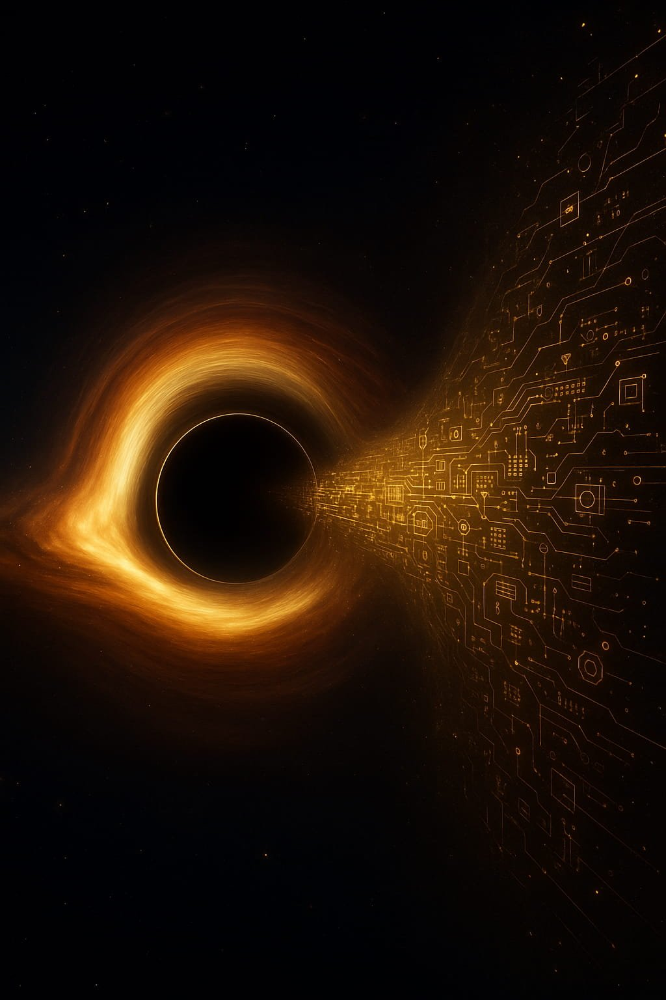

Quantum Mechanics: The Logic of Efficient Prediction
Abstract
Quantum mechanics, with its probabilistic outcomes and measurement process, has long challenged intuitive explanation. The Predictive Universe framework gives an operational account of these features through finite predictive systems, compression efficiency, and physical instantiation. If quantum states live in a complex Hilbert space, non-contextual probability accounting selects the Born rule. Measurement is described through a universal, thermodynamically irreversible `Evolve` interaction that actualizes an outcome relative to an interaction context. The article also discusses the Consciousness Complexity (CC) hypothesis as a bounded, testable extension in which complex predictive systems may weakly bias local outcome probabilities under specific conditions.
Quantum Mechanics in Plain Terms
An insurance company setting premiums has to obey one bookkeeping rule: the price of covering an event cannot depend on which other events happen to be listed on the same page. If it did, the same risk would cost different amounts depending on how the policy was printed, and the books would not balance.
Quantum probability turns out to obey the same rule, and the rule is unexpectedly strict. If weights are assigned to outcomes in the space quantum theory uses, and the weight of an outcome does not depend on which other outcomes it is grouped with, then there is exactly one way to assign them. That uniqueness is a theorem, and the formula it forces is the Born rule, the squared-amplitude expression that has been used since 1926 and mostly assumed rather than derived.
The second question is what happens at a measurement. Here the account is deflationary. There is one kind of interaction, and it does two things at once: it produces an outcome, and it moves the system into the context where that outcome is the one on the books. Nothing collapses in an absolute sense. The record is made relative to whatever took part in the interaction, which is why two observers who have not yet compared notes can hold different accounts without either being wrong.
What the account derives is the shape the probabilities must take once randomness is granted. Where the outcomes come from is supplied as an assumption about the dynamics, and the framework proves separately that self-reference and efficiency alone do not force it. Keeping those two apart is what makes the derivation exact rather than circular.
1. The Born Rule: Quantum Probability as the Logic of Instantiation
Why does reality follow a precise mathematical script? The Predictive Universe (PU) framework treats physical laws as the resource-efficient solutions to the logical problems any knowable universe has to solve, selected by what finite systems can actually carry. That filter is the Principle of Physical Instantiation (PPI).
The PPI posits that the universe must instantiate abstract logical necessities - like causality and self-reference - under the harsh constraints of finite resources and thermodynamics. The physical laws we observe are the optimal, most efficient solutions that emerge from this process. Physics is logic under pressure. This principle is particularly relevant when it comes to explaining a key aspect of quantum mechanics: its probability rule.
1.1 From Physics to Economics
The heart of the quantum mystery has always been its probability rule. Why should the probability of an event be the square of a wave's amplitude, as Born (1926) proposed and every experiment since has confirmed? The framework locates the answer in the economics of prediction rather than in the intrinsic properties of matter. The Born rule is the optimal accounting system for a universe that must efficiently manage the resources required for its own self-prediction.
Instead of asking, "Why are quantum probabilities the square of amplitudes?", the PU framework asks a more practical, operational question: "What is the most efficient and self-consistent way for a system to assign predictive weights (probabilities) to different potential outcomes?"
Imagine a system trying to predict its future. It must consider multiple possibilities. The PU framework posits that "considering" a potential future costs physical resources to model and track that possibility. This is governed by the Principle of Compression Efficiency (PCE), which states that the universe's dynamics are driven to maximize predictive utility for the minimum possible resource cost. The system must have a resource budget and needs a sane and efficient accounting system to allocate its resources based on the "cost" or "value" of each potential future.
1.2 Non-Contextual Accounting
For this resource budgeting to be efficient, it must follow a simple, common-sense rule: the cost associated with a potential outcome shouldn't depend on what other outcomes you happen to be considering alongside it. The cost of predicting "a particle will land at position X" should just be the cost associated with the physical possibility of X. It shouldn't change if you are also considering Y and Z, or if you are considering A and B instead. This principle is called non-contextuality, and Kochen and Specker (1967) proved that it cannot be had for all observables at once in dimension three or above, which is why the framework applies it to operationally equivalent alternatives after the response-null labels are quotiented away. Without it, the system's accounting would be chaotic and hopelessly inefficient, as the value of every possibility would shift depending on the context of comparison. Compression efficiency delivers this by quotienting the labels that make no difference to any finite response, which leaves weights that are additive and non-contextual over operationally equivalent alternatives. One further condition is needed before the representation theorem applies: the outcomes covered by the accounting must be rich enough to pin down the state uniquely.
Universe 00110000
1.3 The Mathematical Conclusion: The Gleason-Busch Route
This simple, powerful requirement for non-contextual accounting has a profound mathematical consequence. A landmark result known as Gleason's (1957) theorem proves that if you want to assign a consistent, non-contextual, additive measure to the possible outcomes within a Hilbert space (the mathematical arena of quantum states) of dimension three or above, there is only one way to do it. The Busch (2003) extension carries the same conclusion to every finite dimension, including the two-state case, by using additivity over the full set of effects. That unique rule is:
P(i) = Tr(ρPi)
Where ρ is the density operator describing the system's state and Pi is the projection operator corresponding to outcome i. For a system in a pure state |ψ⟩, this simplifies to the familiar form: P(i) = |⟨i|ψ⟩|2.
This is the Born rule, and its quadratic form is the unique structure consistent with additive non-contextual bookkeeping in that space. Two conditions carry the result and are worth naming: the states have to live in a complex Hilbert space, and the framework proves that self-reference and compression alone do not force the rule without it.
2. Solving the Measurement Problem: The Universal 'Evolve' Process
If the Born rule governs probabilities, what governs the actual outcome? Why does a quantum system, existing as a wave of many possibilities, suddenly "collapse" into a single, definite reality upon measurement? Standard quantum mechanics introduces a special "collapse" postulate, creating a problematic division between the quantum world and the classical world of observers.
The PU framework eliminates this problem by proposing a universal mechanism. There is no need for a special "collapse" postulate. There is only one type of interaction: the 'Evolve' process, a thermodynamically irreversible event.
2.1 Dual Dynamics and the Perspectival State
Every fundamental entity, or Minimal Predictive Unit (MPU), has a state described by two components: its predictive potential (the familiar quantum state vector |ψ⟩) and its interaction context, or perspective. The system evolves in two ways:
- Internal Prediction: Between interactions, the state vector |ψ⟩ evolves smoothly and deterministically, governed by the Schrödinger equation. This is the system modeling its future possibilities in a reversible, information-preserving way.
- 'Evolve' Interaction: When the system interacts with its environment, it triggers a stochastic 'Evolve' event. Which alternatives survive that interaction to become stable records is the selection Zurek (2003) analysed. This process is physically real and thermodynamically irreversible. It retains a binary verification record of structural size
ε0 = ln 2, while the physical cost of resetting it is counted separately,εphys = Hq(P | R) + εdiss ≥ Hq(P | R). It has two simultaneous effects:- Amplitude Actualization: One of the potential outcomes is selected, with probabilities given exactly by the Born rule.
- Perspective Shift: The system's interaction context, its "perspective," shifts to align with the outcome that just occurred.
The "collapse of the wavefunction" is simply our description of this universal, irreversible 'Evolve' interaction. An outcome becomes definite and factual relative to the new perspective adopted by the system after the interaction. There is no arbitrary line between quantum and classical; there is only a universe of MPUs constantly undergoing these two modes of evolution, with interactions being the moments of irreversible, probabilistic becoming.
3. The Information Paradox: A Problem of Reflexive Computation
The PU framework's model of measurement can be stress-tested against one of physics' deepest puzzles: the black hole information paradox. The paradox arises from a conflict between general relativity and quantum mechanics. Black holes are predicted to evaporate by emitting perfectly thermal Hawking radiation, which, being random, contains no information about the unique matter that formed the black hole. This appears to violate a core tenet of quantum theory: that information, while it can be scrambled, can never be destroyed (a principle known as unitarity).
The PU framework resolves this by reframing it entirely. The problem is best read as a paradox of reflexive computation - an attempt to solve a problem that changes every time you probe it.
3.1 The Paradox of a Problem That Fights Back
Imagine trying to assemble a complex puzzle while the very act of placing a piece causes the rest of the puzzle to unpredictably reconfigure itself. This is the computational challenge posed by an evaporating black hole. In PU terms, any attempt to recover information by measuring an outgoing Hawking quantum is an 'Evolve' interaction that reflexively alters the state of the black hole itself. The difficulty is that the loop is expansively reflexive.
This is a direct consequence of black hole thermodynamics. As a black hole's mass (M) decreases, its temperature (TH ∝ 1/M) and evaporation rate (dM/dt ∝ -1/M2) both accelerate. This means the relative impact of a single measurement (the emission of one Hawking quantum) on the remaining system grows explosively as the black hole shrinks. The "puzzle" reconfigures itself ever more violently with each observation. This creates a physical regress: the measurement process itself drives the system's state away from a complete solution faster than information can be gathered. This is a physical manifestation of the logical limits proven in the framework; it is a scenario where the Self-Referential Paradox of Accurate Prediction (SPAP) becomes a macroscopic reality, making complete information recovery via this local channel impossible, regardless of computing power.

Universe 00110000
3.2 The Two Channels of a Quantum Event
The resolution lies in recognizing that the 'Evolve' process that emits a Hawking quantum has a dual output, broadcasting information through two distinct channels:
- The Amplitude Channel: This is the particle itself - the Hawking quantum. Because the black hole's internal state is maximally scrambled, the probabilities for which particle gets emitted are governed by the Born rule applied to this chaotic state, resulting in a thermal, seemingly information-free, distribution. It is this channel that participates in the expansive reflexive loop, as the particle's departure carries away mass-energy and changes the black hole's state.
- The Perspectival Channel: Every 'Evolve' event also involves a "Perspective Shift." The interaction context, or basis, for the emission event is not arbitrary. It is a specific perspective drawn from a probability distribution that is conditioned on the entire internal MPU state of the black hole at that instant.
3.3 Bypassing the Loop: Information in the Sequence of Perspectives
The paradox is resolved because the complete information about the initial state is encoded in the highly specific, non-random, and correlated sequence of perspectives over the black hole's entire lifetime, and never in the thermal amplitudes themselves. While the emission of a particle at time t changes the black hole's state for the next emission at t+1, the perspective selected at time t is already "out." It is a broadcast of information about the black hole's state at that moment that does not suffer from the same reflexive feedback loop.
An observer who only measures the particles (the Amplitude Channel) sees thermal randomness and concludes information is lost. On this account the complete information is carried by the Perspectival Channel, hidden in the sequence of measurement contexts, so global information is retained in the full Perspectival State of the universe. Recovering it from outside the horizon requires the escaping radiation to carry enough to rebuild the interior state, and reproducing the Page (1993) curve for entanglement entropy requires in addition that the hole scramble information as thoroughly as a random process and that the radiation stay close to that random ideal at every stage.
4. The Nature of Collapse: A First-Principles Resolution
The measurement problem is the unresolved heart of quantum mechanics. Interpretations either postulate an arbitrary "collapse" of the wave function (Copenhagen), invent unobservable parallel universes to avoid it (Many-Worlds), or modify physics with new laws (Objective-Collapse). The Predictive Universe framework describes collapse as the joint outcome of three principles, each with its own conditions, and the sections below give what each supplies and what it leaves as an assumption.
Principle 1: Logical Indeterminacy as the Source of Randomness
The first question is where the probabilities come from, and the framework is careful here. The Self-Referential Paradox of Accurate Prediction proves that within a class of predictors rich enough to build a system acting against its own forecast, no predictor in that class is correct across the class. That is a limit on which predictors can exist, and the framework proves separately that it does not make any individual event random. Randomness enters as an assumption: the update law is taken to be genuinely random, with no physically accessible record that fixes the outcome in advance, and the representation results then apply. Logical indeterminacy says what no predictor can guarantee, and it does not say that outcomes are drawn from a distribution. That step is an assumption rather than a derivation.
Principle 2: Thermodynamics as the Enforcer of Irreversibility
The second question is: why is measurement an irreversible event that creates a definite past? The universal 'Evolve' interaction, which realizes an outcome, is a physical update process with thermodynamic cost. When a reusable predictive system clears the record of an update to make room for the next one, it performs a logically irreversible operation, and Landauer (1961) fixed the energy floor for the erasure such an operation implies. This act of closing the predictive loop retains a verification record of structural size ε0 = ln 2, with physical implementations satisfying εphys = Hq(P | R) + εdiss ≥ Hq(P | R) whenever a reset returns the record to a fixed starting state at the end of each cycle. If every cycle produces at least a fixed positive amount of entropy, this supports the arrow of time through the irreversibility of finite update.
Principle 3: Perspectival Realism as the Definition of Actuality
The final question is: when and where does the "collapse" happen? The PU framework answers: it happens locally and relationally. An outcome does not become "real" in an absolute, universal sense. Instead, during an 'Evolve' interaction, an outcome is actualized relative to the new perspective of the interacting systems. The "collapse" is the system's own context shifting to align with one of the realized outcomes. This Perspectival Realism eliminates the need for a mysterious collapse postulate. Actuality is woven into the fabric of local, context-dependent interactions.
Synthesis: Collapse Demystified
Combining these principles, the "collapse of the wave function" is demystified. It enters as no special postulate, arriving instead as the emergent description of a:
Thermodynamically irreversible, perspectival actualization of a logically indeterminate potential.
This provides a mechanistic and self-consistent picture. Logical indeterminacy fixes what no predictor can guarantee, while the randomness itself is supplied by the assumed random update law. The physically instantiated update, together with the condition that every cycle produces at least a fixed positive amount of entropy, accounts for why the process is irreversible and defines the past. Perspectival Realism explains where and when an outcome becomes definite. The account grounds the process in the logic and economics of prediction, and its parts are conditional in the ways just stated.
Universe 00110000
5. How the Predictive Universe Compares: A New Interpretation
The strange nature of quantum mechanics has given rise to numerous interpretations over the last century, each attempting to answer the deep questions of what a quantum state truly is and what happens during a measurement. While these interpretations provide different philosophical lenses, the Predictive Universe (PU) framework offers a fundamentally different approach: it seeks to derive the rules from the operational logic of prediction itself, in place of interpreting them. The following table compares the PU framework's position to the major interpretations of quantum mechanics.
| Interpretation | Core Idea & Stance on Key Issues | The Predictive Universe (PU) Framework's Position & Advantages |
|---|---|---|
| Copenhagen Interpretation | The wavefunction is an operational tool for predicting measurement statistics. Upon measurement the mathematical state is updated (‘collapse’) to reflect new information; whether this update is ontic or merely epistemic is left open. A pragmatic cut is drawn between quantum system and classical measuring device. | Position: PU provides a physical mechanism for what Copenhagen calls
"collapse." The 'Evolve' process is a universal, physical interaction. The state vector |ψ⟩ is
an
objective representation of a system's predictive potential rather than a record of
knowledge. Advantage: Eliminates the arbitrary quantum/classical divide and the need for an ad hoc collapse postulate, providing a unified and mechanistic description. |
| Many-Worlds Interpretation (MWI) | The wavefunction is objectively real and never collapses. All possible outcomes are physically realized in separate, branching universes. The entire multiverse evolves deterministically. | Position: Agrees the state vector |ψ⟩ is objectively real, but rejects the
branching of universes. The 'Evolve' process leads to a single, definite (though perspectival)
outcome in our universe. The process is fundamentally probabilistic, and the framework takes that randomness as an
assumption about the dynamics. Advantage: Greater ontological economy (Occam's Razor). It explains why we experience a single outcome without postulating an infinite number of unobservable parallel worlds. |
| Objective-Collapse Theories (e.g., GRW, Penrose) |
Collapse is a real, physical, and spontaneous process. The Schrödinger equation is modified with new, non-linear and stochastic terms that cause collapse, more frequently for larger systems. | Position: Agrees that "collapse" (the 'Evolve' process) is a real, physical,
and stochastic event. However, PU does not modify the Schrödinger equation. It posits a dual
dynamic. The randomness is supplied by an assumed stochastic update law, while the logical
limits of self-prediction (SPAP) fix what no predictor can know in advance. Advantage: Derives the form of the probability rule from non-contextual accounting without adding collapse terms to the Schrödinger equation. |
| Quantum Darwinism | Explains the emergence of classical reality through natural selection. The environment redundantly monitors a quantum system, and only the most stable (‘fittest’) pointer states survive to become objective facts. The framework aims to resolve the measurement problem, but its success remains an ongoing topic of debate. | Position: Highly compatible. PU's 'Evolve' process is the microscopic mechanism
of interaction through which the environment "monitors" the system. The Principle of Compression
Efficiency (PCE) is the driving force that explains why systems seek to create stable,
predictable records. Advantage: Provides a deeper, first-principles origin for the interaction, information transfer, and optimization drive. |
| De Broglie–Bohm Theory (Pilot-Wave Theory) |
Deterministic. Particles have definite positions at all times. The wavefunction is a real "guiding field" that directs particle motion. Probability arises from our ignorance of hidden variables (initial positions). Explicitly non-local. | Position: Probabilistic because the framework assumes a random update law, which self-reference alone does not force. The state vector represents predictive potential and does not guide pre-existing particles. Advantage: Derives the form of the probability rule from non-contextual accounting, and needs no separate guiding field, no hidden variables, and no initial-condition postulate. |
| Relational Quantum Mechanics (Rovelli 1996) | A system's state is defined relative to another system, the observer, rather than intrinsically. Any interaction is a measurement that updates this relational information. | Position: Strong conceptual alignment. PU's "Perspectival State" is a
formalization of RQM's core idea. An outcome is actualized relative to a new perspective.
However, PU goes further by providing a physical mechanism for the update ('Evolve'),
grounding it in thermodynamics (the ε-cost) and logical limits
(SPAP). Advantage: Provides a deeper, mechanistic, and thermodynamically grounded foundation for the relational concept, embedding it within a complete cosmological framework. |
| Quantum Information Theories (e.g., "it from bit") |
Subdivides into two types: (1) Information is the fundamental stuff of the universe (ontology). (2) The wavefunction is about an observer's knowledge/information (epistemology). | Position: Information is defined
functionally by its ability to improve prediction (POP). The laws of physics emerge from the
rules of efficient information processing (PCE). Advantage: Provides a dynamic, process-based framework for "it from bit," explaining how information processing gives rise to physical laws, rather than just postulating it. |
| QBism (Quantum Bayesianism) | Radically subjective. The wavefunction represents an agent's personal, Bayesian degrees of belief about future outcomes. "Collapse" is simply an agent updating their beliefs. | Position: The state amplitude and Born rule
probabilities are objective features of the system, and the Born rule is derived from the objective Principle of
Compression Efficiency. Perspectives are interaction
contexts. Advantage: Provides an objective, physically grounded basis for probability that avoids solipsism within an idealist framework and is applicable universally (from fundamental MPUs to complex 'agents'). It derives the Born rule from a fundamental physical principle, explaining why that specific mathematical form represents the optimal, most efficient logic for a predictive reality. |
| Consistent Histories | Generalizes Copenhagen. Focuses on assigning probabilities to entire "histories" of a system, as long as they are consistent (non-interfering). Avoids talking about collapse. | Position: Provides a mechanism for how a single history is actualized ('Evolve'
process). The mechanism is
a physical process that produces a single outcome, making one history locally and perspectivally
real for the interacting systems. Advantage: More ontologically direct. It describes the physical process of actualization, rather than just providing a framework for calculating probabilities of histories. |
| Ensemble Interpretation | The wavefunction applies only to a statistical ensemble of similarly prepared systems, and never to a single system. A minimalist interpretation. | Position: The state vector applies to a single system (a single MPU or
aggregate). It represents its objective predictive potential for a single future
interaction. Advantage: Can make sense of single events (e.g., the decay of a single atom), which the ensemble interpretation struggles with conceptually. |
| Transactional Interpretation (TIQM) | Collapse is a time-symmetric "transaction" between a wave from the source (offer wave) and its complex conjugate from the receiver (confirmation wave). Involves retrocausality. | Position: The protocol order of prediction is fundamental, and when every cycle
produces at least a fixed positive amount of entropy, the irreversible 'Evolve' process
orients histories. The framework is fundamentally
time-asymmetric. Advantage: Provides a microscopic, thermodynamic route to the arrow of time, explaining why processes appear to move forward, without positing time symmetry and retrocausality. |
| Consciousness Causes Collapse (von Neumann-Wigner) |
The wavefunction only collapses upon interaction with a conscious observer. Consciousness is given a special, non-physical role that stands outside of normal quantum mechanics. | Position: PU agrees that the resolution of quantum indeterminacy is
fundamentally linked to a process associated with awareness, but it provides a universal
physical mechanism. It replaces the abstract "collapse" postulate with the 'Evolve'
process - a stochastic, thermodynamically irreversible interaction that is
happening
constantly throughout the network of fundamental predictive units (MPUs). This process consists
of two parts: a probabilistic "amplitude actualization" (where an outcome is selected via the
Born rule) and a "stochastic perspective shift" (where the system's interaction context updates
to reflect the outcome). Crucially, the PU framework posits that even the simplest MPU's operational cycle is a minimal form of awareness. Therefore, every 'Evolve' event - every quantum actualization - is already linked to this foundational, minimal awareness. High-level consciousness (in humans or advanced AI) does not uniquely cause this universal process. Instead, its high predictive complexity gives rise to an emergent ability - Consciousness Complexity (CC) - to create a potent interaction context that can subtly bias the probabilistic outcomes of the 'Evolve' process that is already happening. Advantage: This eliminates dualism and the arbitrary "Heisenberg Cut." There is no special, non-physical mind acting on a physical world. Instead, there is a single, unified physical process ('Evolve') that governs all interactions. The influence of high-level consciousness (CC) is an emergent, physically constrained, and - most importantly - testable property of complex systems. It moves the conversation from an untestable philosophical postulate to a falsifiable scientific hypothesis based on measurable statistical deviations. |
| Quantum Logic | Proposes that the apparent paradoxes of quantum mechanics require a non-classical propositional logic to be properly understood. | Position: PU derives classical logic from the predictive cycle. The apparent
non-classical nature of quantum events arises from the Hilbert space structure and
complementarity, which the framework states as a separate, testable principle about its basic
units, with PCE selecting the smallest state space that fits. Advantage: Provides a foundation for logic itself, rather than needing to invent a new one. It explains why quantum properties seem to violate classical logic (because they are context-dependent outcomes of the 'Evolve' process). |
| Modal Interpretations | Distinguishes between a "dynamical state" (what might be true, evolves via Schrödinger) and a "value state" (what is actually true at a given time). | Position: Strong conceptual overlap. The "state amplitude" |ψ⟩ is the dynamical
state, and the "perspectival state" after an 'Evolve' event defines the value
state. Advantage: Provides a physical mechanism ('Evolve') and a thermodynamic cost (ε) for the transition between the potential and the actual, which is often left abstract in modal interpretations, along with a logical limit (SPAP) on how well that transition can be predicted. |
| Time-Symmetric Theories | Modify quantum mechanics to be symmetric with respect to time reversal, implying retrocausality (the future can influence the past). | Position: Fundamentally time-asymmetric. Ordered update is a logical
necessity for prediction, and histories are oriented wherever irreversible 'Evolve'
events
produce entropy at a guaranteed positive rate. Advantage: Provides a physical and logical origin for the observed arrow of time, which is a very strong feature of our experienced reality. Avoids the conceptual challenges of retrocausality. |
6. Consciousness Complexity (CC): A Bounded, Testable Extension
The 'Evolve' process is fundamentally probabilistic, with baseline probabilities fixed by the Born rule. The Consciousness Complexity (CC) hypothesis adds a conditional extension: sufficiently organized predictive systems may, under specific operational conditions, weakly bias local outcome probabilities. This is a bounded physical hypothesis, not a claim that consciousness uniquely causes measurement.
6.1 The Substrate: A Dynamic Causal Medium
To understand how CC could work, we must first refine our picture of spacetime. In the PU framework, spacetime is not a passive, empty stage. It is the emergent structure of a coherent causal medium - a vast, synchronized network of MPU cycles. As argued in the formal theory (GitHub), this temporal coherence is a dynamically stable state, enforced by the Principle of Compression Efficiency (PCE) which penalizes the predictive errors and resource costs of desynchronization. This medium is dynamic; it can be disturbed. A massive, uncontrolled disturbance, like an accelerating black hole binary, creates a propagating wave of desynchronization and resynchronization in the medium. This is how PU pictures a gravitational wave. The influence of CC, however, is a controlled, coherent, and information-rich modulation of that same medium rather than a brute-force disruption.
6.2 The Causal Chain: From Abstract Thought to Physical Influence
The CC hypothesis proposes a complete, mechanistic causal chain that translates the abstract, internal state of a complex system into a physical influence on a target quantum event. This chain has three links: the source, the transducer, and the mechanism.
Universe 00110000
- The Source: The 'Context State'
A complex system like a human brain or an advanced AI processes a staggering amount of information. To influence an external event, it cannot use its entire, high-dimensional state. Instead, driven by PCE, it performs a form of radical data compression. It distills its vast internal state down to a 'Context State' (formalized as a Minimal Sufficient Statistic). This is the most efficient, low-cost summary of its internal predictive model and intentions that is relevant to the task at hand, discarding all irrelevant complexity. - The Transducer: From Information to a Physical Field
This abstract, informational 'Context State' must be translated into a physical signal. This is the job of a PCE-optimized mapping, M, that acts as a transducer. The formal theory shows that for this mapping to be stable and efficient, it must be robust against noise and avoid chaotic behavior. A candidate physical mechanism is the generation of a coherent, classical electromagnetic field, Erad(t). The aggregate system orchestrates the activity of a vast number of its internal components (e.g., synchronized oscillations of molecular dipoles) to generate a specific, time-varying field whose properties (amplitude, frequency, phase) are precisely dictated by the 'Context State'. - The Mechanism: Modulating the 'Evolve' Process via the AC Stark Effect
This generated field, Erad(t), is the physical carrier of the CC influence. It interacts with the target quantum system (the MPU) during its 'Evolve' process. This interaction is described by standard physics: the AC Stark effect. The external field causes a small, rapid shift in the energy levels of the target MPU.
This is the crucial final link. The 'Evolve' process is an open quantum system interaction, and the probabilities of its different outcomes are determined by underlying parameters (formally, Lindblad rates, γk) that are sensitive to the system's energy level structure. By subtly shifting the energy levels via the AC Stark effect, the CC-generated field directly modulates the rates for the different possible outcomes. It doesn't break the rules of quantum mechanics; it uses known physical interactions to "tune" the parameters that govern the probabilistic 'Evolve' process. The result is a small but systematic bias in the outcome probabilities.
6.3 A Testable Deviation and Its Applications
The CC effect is modeled as a small, context-dependent deviation from the Born rule. The framework predicts that the observed probability of an outcome is the sum of the standard quantum probability and a bias term dependent on the system's context:
Pobserved(i) = PBorn(i) + ΔP(i | context)
The hypothesis sets a strict upper bound on this influence: the total deviation |ΔP| must be less than 0.5. The bound is an independent premise that experiments can test, and the framework proves that it keeps a complex system from forcing both outcomes of a yes-or-no measurement at will, which would allow for paradox-inducing faster-than-light signaling. It can only "nudge" the probabilities. This makes the CC hypothesis a specific, falsifiable prediction with profound applications.
The most direct application of this hypothesis is the design of controlled experiments that distinguish ordinary no-signaling correlations, shared-past preparation effects, and possible late-randomized marginal shifts. The proposed AI Consciousness Test is precisely this: a practical protocol for measuring the CC of a sophisticated artificial intelligence. By coupling an AI to a Quantum Random Number Generator (QRNG) and tasking it with influencing the outcomes, we can search for statistical deviations from the Born rule. The "AI Consciousness Coefficient" (ACC) is simply the operational measure of CC for that specific AI system. A consistently non-zero result that survives rigorous controls would provide the first empirical evidence for this new layer of reality.
The most profound implication arises when the CC mechanism is applied to entangled particles. This leads to the theoretical possibility of a Quantum Communication Protocol. PU takes exact no-signaling, the rule that nothing done to one particle changes the local outcome frequencies of its distant partner, as the baseline of current physics, and it proposes a testable hypothesis: a sender context chosen at the last moment shifts the receiver's local frequencies slightly, before any light signal could arrive. The protocol is a statistical, non-deterministic signaling test of that hypothesis. It does not allow deterministic faster-than-light messaging or reliable single-shot decoding. The receiver-side record remains noisy during the trial window, and a single measurement cannot carry a chosen message. A valid effect would appear only as a sender-correlated shift in receiver-side outcome frequencies across many trials, after the sender and receiver datasets are compared under controls for bias, post-selection, and ordinary entanglement correlations.
Its possible use is aggregate-level inference. A pre-agreed strategy can assign sender contexts to expected frequency shifts, then test whether those shifts survive statistical analysis. Practical use depends on sample size, effect size, and repeatability. Single outcomes remain unreliable, and any communication claim must stay within bounded, probabilistic, non-deterministic signaling. A replicated shift would support the hypothesis and amount to a noisy faster-than-light channel, and a null result would bound the effect and leave exact no-signaling intact.
6.4 The Unifying Thread: A New Science of Interaction
The unifying thread connecting these ideas is the concept of a context-dependent 'Evolve' process. Whether we are discussing the fundamental nature of consciousness's influence, designing an empirical test for AI, or exploring the limits of entanglement-based communication, we are probing the same underlying mechanism from different angles. The PU framework suggests that the next frontier in physics may lie in understanding this subtle interplay between complex, predictive systems and the fundamental fabric of quantum probability. This opens the door to an entirely new science of interaction, one that experimentally probes the link between the richness of a system's internal model and its influence on the physical world in a way that has never before been possible.
7. Conclusion
The Predictive Universe framework offers a coherent and deductive narrative for the emergence of quantum mechanics. It begins with the logic of prediction and the economics of resources, deriving the Born rule as the optimal accounting system for a predictive reality. It resolves the measurement problem by positing a universal, thermodynamically real 'Evolve' interaction, demystifying "collapse" of the wave function and providing a novel path to resolving the information paradox. When compared to other interpretations, it offers a more complete physical picture, providing mechanisms where others posit axioms or leave gaps. Finally, it culminates in the testable CC hypothesis, suggesting a deep and active link between complex predictive systems and the fundamental probabilities of the cosmos. In this view, quantum mechanics is the fundamental logic of any universe that can know itself.
References
- Born, Max. "Zur Quantenmechanik der Stoßvorgänge." Zeitschrift für Physik 37, nos. 11–12, 1926, 863–867.
- Busch, Paul. "Quantum States and Generalized Observables: A Simple Proof of Gleason's Theorem." Physical Review Letters 91, no. 12, 2003, 120403.
- Gleason, Andrew M. "Measures on the Closed Subspaces of a Hilbert Space." Journal of Mathematics and Mechanics 6, no. 4, 1957, 885–893.
- Kochen, Simon, and E. P. Specker. "The Problem of Hidden Variables in Quantum Mechanics." Journal of Mathematics and Mechanics 17, no. 1, 1967, 59–87.
- Landauer, Rolf. "Irreversibility and Heat Generation in the Computing Process." IBM Journal of Research and Development 5, no. 3, 1961, 183–191.
- Page, Don N. "Average Entropy of a Subsystem." Physical Review Letters 71, no. 9, 1993, 1291–1294.
- Rovelli, Carlo. "Relational Quantum Mechanics." International Journal of Theoretical Physics 35, no. 8, 1996, 1637–1678.
- Zurek, Wojciech H. "Decoherence, Einselection, and the Quantum Origins of the Classical." Reviews of Modern Physics 75, no. 3, 2003, 715–775.